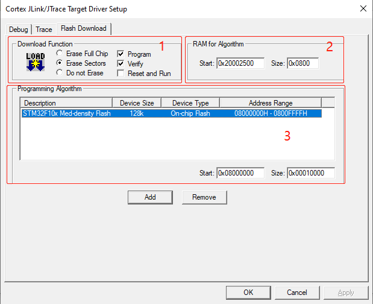
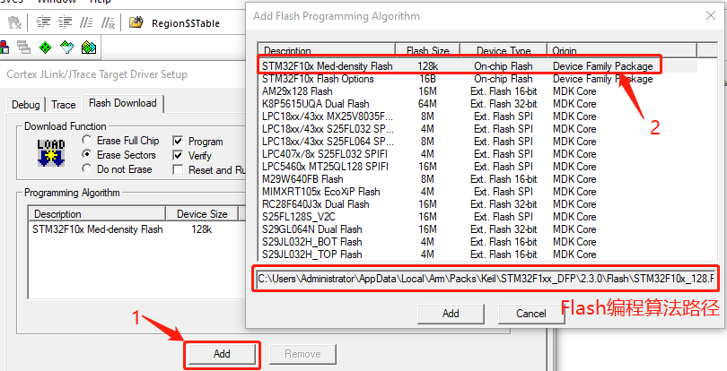
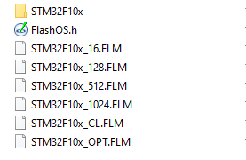
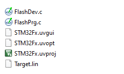
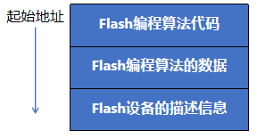

调试器Flash编程原理#
调试器可以直接访问SRAM（通过Cortex-M内核内部的调试部件），但是无法直接访问Flash。
所以下载程序时，调试器会先将Flash编程算法（驱动程序）和应用程序下载到SRAM中，然后调试器调用该Flash编程算法就可以将应用程序写进Flash（其实就相当于MCU自己进行Flash编程操作）。
所以不难推断出：该Flash编程算法就是一个STM32程序。
有时应用程序比较大，不能一次性全部下载到SRAM，所以要将整个应用程序写到Flash中需要多次重复这个过程。
- 参考《Cortex-M3 & M4权威指南》14.7.2节 下载地址
- 参考JLinkLog.txt文件（Keil工程根目录下）
1. Keil中Flash编程配置#
我们以Keil为例，分析一下整个过程。
如下图所示，Keil中Flash Download的配置分为三个部分。

-
Download Function：主要是一些Flash操作，勾选后调试时调试器就行执行相应的动作。调试程序时，先将Flash编程算法下载到SRAM，然后调试器根据此处勾选情况，调用相应的Flash操作函数完成操作。
-
RAM for Algorithm：指定Flash编程算法在内存中的运行地址和所需的内存空间大小。运行地址可以是SRAM的任意地址（但是运行地址+Size不能超出SRAM最高地址），内存空间大小视算法的实际大小而定，可大不可小。
-
Program Algorithm：Flash编程算法列表，因为不同的芯片有不同的Flash编程算法。一个Flash编程算法能适用于多个MCU，因为它们只是Flash的大小不一样（STM32F10x系列Flash的起始地址都是0x0800 0000）。以STM32F103C8T6来说，其Flash大小为64KB（0x10000）,而我们使用的Flash编程算法是128Kb（0x20000）,所以我们将Size选项的值修改为0x10000。
2. Flash编程算法#
上文我们推断出：该Flash编程算法就是一个STM32程序。那么这个Flash编程算法是怎么样的呢？下面我们一起来看。
按照下图所示的方法，就可以找到Keil中自带的Flash编程算法工程路径。

按照上面找到的路径打开，可以看到如下目录结构：

- STM32F10x文件夹中是Flash编程算法Keil项目。

- *.FLM 预先编译好的EFL文件，后缀FLM只是重命名而已。
可以看到该Flash编程算法一共有3个源文件（*.c）和一个链接脚本（Target.lin）：
- FlashOS.h 中是FlashDevice数据结构和Flash操作函数的声明，这些函数是必须要实现的（个别是可以选的），相当于一个规范。
struct FlashDevice {
unsigned short Vers; // Version Number and Architecture
char DevName[128]; // Device Name and Description
unsigned short DevType; // Device Type: ONCHIP, EXT8BIT, EXT16BIT, ...
unsigned long DevAdr; // Default Device Start Address
unsigned long szDev; // Total Size of Device
unsigned long szPage; // Programming Page Size
...
};
// Flash Programming Functions (Called by FlashOS)
extern int Init (unsigned long adr, // Initialize Flash
unsigned long clk,
unsigned long fnc);
extern int UnInit (unsigned long fnc); // De-initialize Flash
extern int BlankCheck (unsigned long adr, // Blank Check
unsigned long sz,
unsigned char pat);
extern int EraseChip (void); // Erase complete Device
extern int EraseSector (unsigned long adr); // Erase Sector Function
extern int ProgramPage (unsigned long adr, // Program Page Function
unsigned long sz,
unsigned char *buf);
extern unsigned long Verify (unsigned long adr, // Verify Function
unsigned long sz,
unsigned char *buf);
- FlashDev.c 中是Flash设备的描述信息，如下所示：
#ifdef STM32F10x_128
struct FlashDevice const FlashDevice = {
FLASH_DRV_VERS, // Driver Version, do not modify!
"STM32F10x Med-density Flash", // Device Name (128kB/64kB/32kB)
ONCHIP, // Device Type
0x08000000, // Device Start Address
0x00020000, // Device Size in Bytes (128kB)
1024, // Programming Page Size
0, // Reserved, must be 0
0xFF, // Initial Content of Erased Memory
100, // Program Page Timeout 100 mSec
500, // Erase Sector Timeout 500 mSec
// Specify Size and Address of Sectors
0x0400, 0x000000, // Sector Size 1kB (128 Sectors)
SECTOR_END
};
#endif
-
FlashPrg.c 中是各种Flash操作的函数的实现（Flash初始化，擦除，读写）
-
Target.lin 是该项目的链接脚本
; Linker Control File (scatter-loading)
;
PRG 0 PI ; Flash编程算法区， PI-位置无关
{
PrgCode +0 ; Code
{
* (+RO)
}
PrgData +0 ; Data
{
* (+RW,+ZI)
}
}
DSCR +0 ; Flash设备描述区，+0表示紧挨着PRG区域尾部存放
{
DevDscr +0
{
FlashDev.o
}
}
该Flash编程算法，最终在SRAM中的布局如下所示：

从链接脚本中可以看出，该项目最终编译出的程序是位置无关的（PI），所以其起始地址可以被任意改变，但是起始地址+Size不能超出SRAM最高地址。

3. 为新的Flash设备创建编程算法#
请参考ARM官方文档：